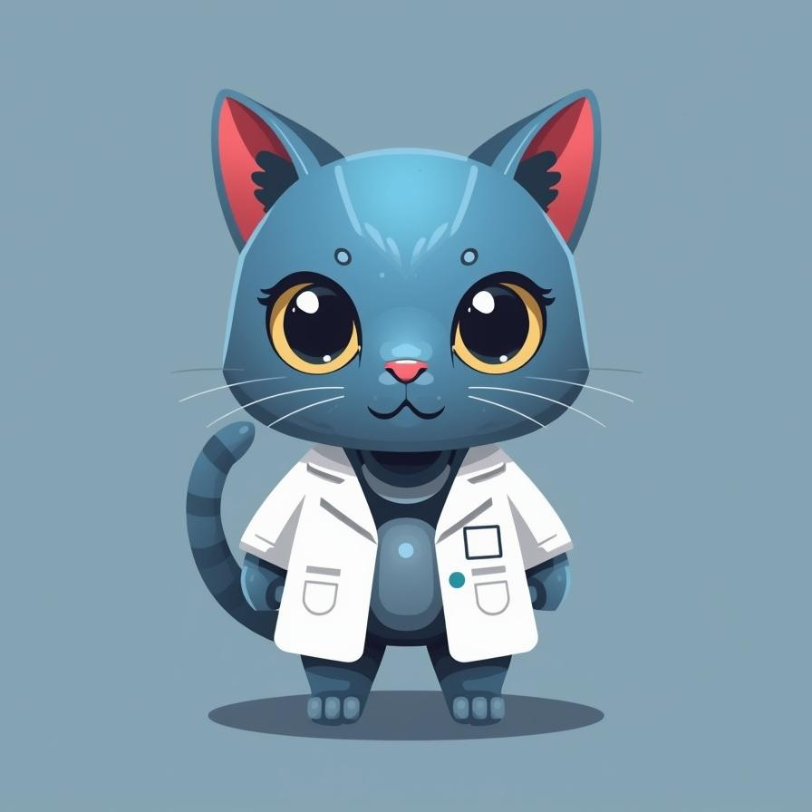

AIに振り回されながらなんかいろいろ作ってる場所です。
失敗も実験のうち。ポンコツ上等。
Claude、Gemini、その他もろもろ。ちゃんと使えてるかは謎だけど、とにかく試す。
スティールギターのプラグインとか、AIと音楽の交差点でごそごそしてます。
AIのヘンテコな挙動とか、実験の結果とか。noteに記録していきます。
スティールギター音源プラグイン
AIのヘンテコな生成画像、実験記録、日々の観察。ただちにChatGPTを閉じて本でも読みなさい。